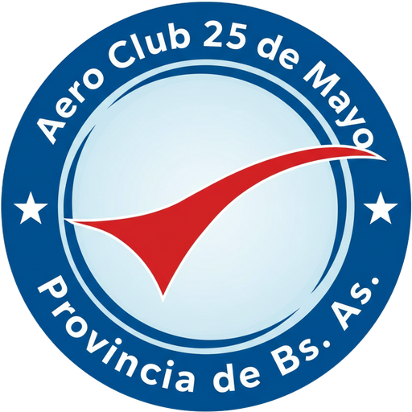
Cómo cargar tus vuelos, seguir tu cuenta y pagar tu cupón desde el celular.
Las pantallas de esta guía son de una piloto de ejemplo, "Sofía Cabrera". Los nombres, importes y datos para transferir son inventados. Para pagar, usá siempre los datos que ves en tu app.
Es la página del club donde cada socio anota lo que vuela y sigue su cuenta. Reemplaza a la planilla de Excel.
Entrás desde el navegador en aeroclub25demayo.com.ar. Funciona en el celular, en la tablet y en la compu, y no hace falta bajar nada de Play Store ni de App Store. Si querés, lo podés dejar como una app más en tu celular (capítulo 3).
Necesita internet (señal o wifi). Si en el hangar no hay señal, cargá el vuelo apenas tengas.
Cargá cada vuelo el mismo día, apenas aterrizás. Revisá bien los datos antes de aceptar: una vez guardado, sólo tesorería lo puede corregir.
Tesorería te da de alta y te pasa tu usuario (tu email) y una contraseña temporal.
Si te aparece "Email o contraseña incorrectos", fijate que el email esté bien escrito y probá de nuevo.
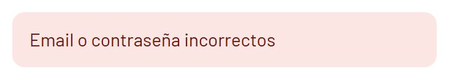
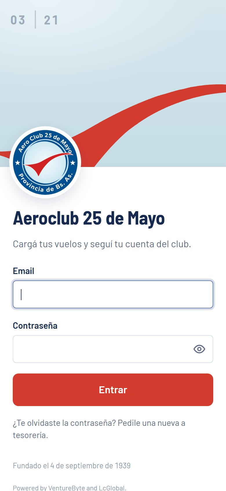
La primera vez, el sistema te da la bienvenida y te pide cambiar la contraseña temporal por una que sepas sólo vos.
Pedile una nueva a tesorería. Te van a dar otra temporal, y al entrar la cambiás de nuevo por una tuya.
La sesión queda abierta en tu celular: no tenés que poner la contraseña cada vez. Si usás un celular o una compu prestada, acordate de salir desde Perfil.
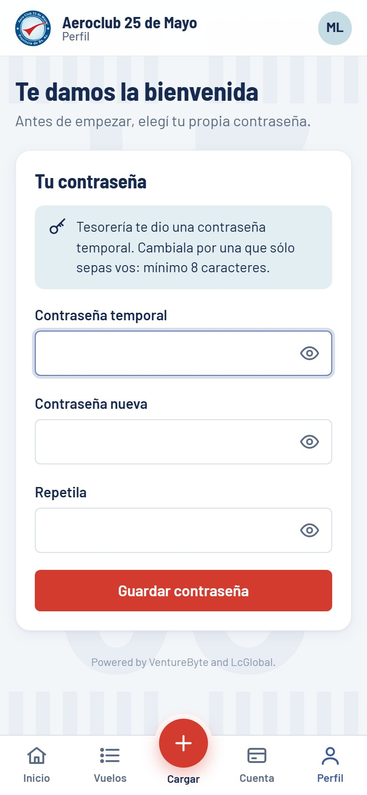
Con dos toques, el sistema queda en la pantalla de inicio de tu celular, con el escudo del club, y se abre como cualquier app.
En Android, si mantenés apretado el ícono del club, aparece el atajo "Cargar vuelo": te lleva directo a la carga.
Desde ahí, abrís el sistema tocando el escudo del Aeroclub en tu pantalla, como cualquier otra app.
Abajo de todo tenés siempre la misma barra, con las cinco secciones del sistema.
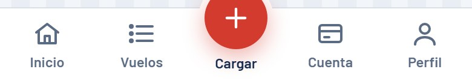
Arriba a la derecha aparece un círculo con tus iniciales: también te lleva a tu Perfil.
Al lado de algunos números vas a ver un círculo con un signo de pregunta. Si lo tocás, se abre un globo que te explica de dónde sale ese número: por ejemplo, cómo se forma tu saldo, con el cupón anterior, los pagos y los servicios.
Para cerrarlo, tocá en cualquier otro lugar de la pantalla.
Si algún número no te cierra, antes de consultar tocá el "?". Casi siempre ahí está la respuesta.
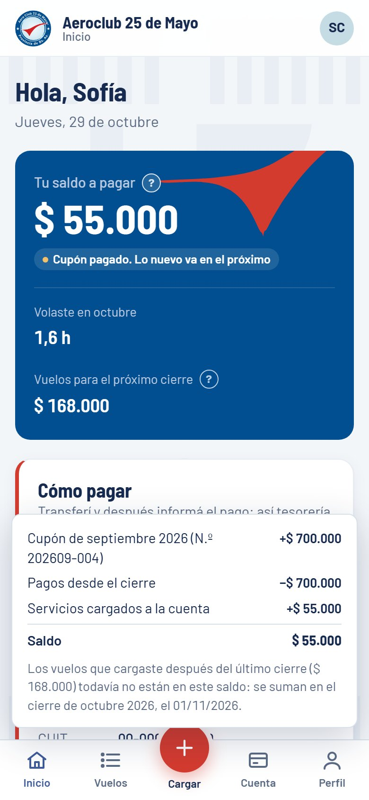
Es lo primero que ves al entrar: tu situación con el club de un vistazo.
Te saluda con tu nombre y la fecha de hoy. Si hay algo importante (por ejemplo, que se te vence el CMA), el aviso aparece acá, antes que nada. Los avisos están en el capítulo 12.
El título te dice en qué situación estás:
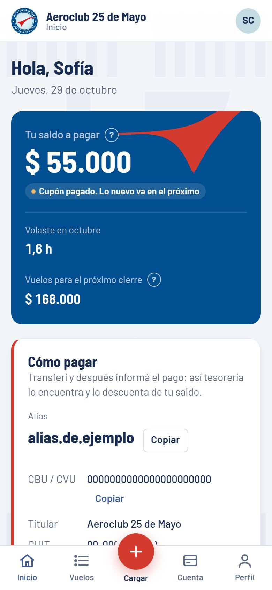
Abajo del importe hay una etiqueta con el estado:
En la parte de abajo de la tarjeta:
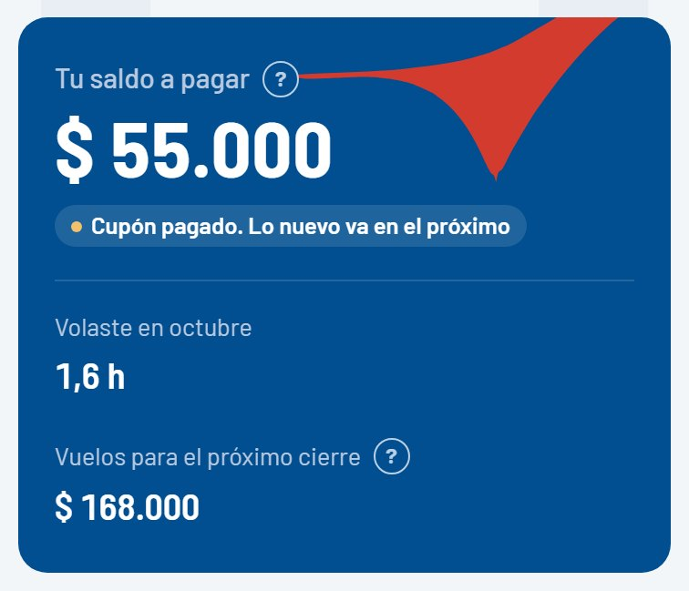
Si tenés algo para pagar, aparece esta caja con los datos para transferir: alias, CBU, titular, CUIT y banco. Con los botones Copiar copiás el alias o el CBU sin tener que escribirlos, y los pegás en la app de tu banco.
Cuando hayas transferido, tocá Informar el pago. Así tesorería lo encuentra y lo descuenta de tu saldo (lo explicamos en el capítulo 8).
Los datos de esta imagen son de ejemplo. Usá siempre los que aparecen en tu app.
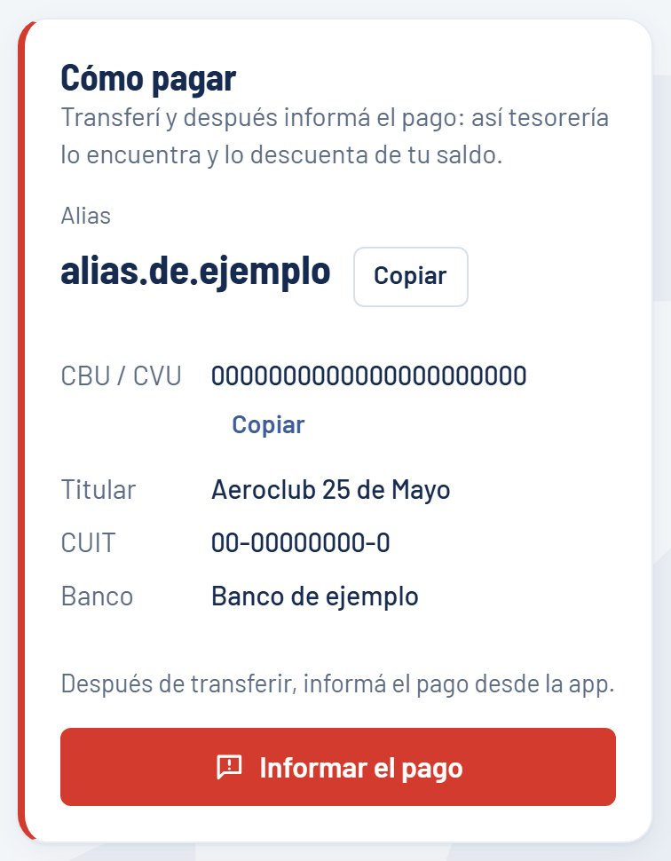
El botón rojo grande te lleva directo a anotar un vuelo. Hace lo mismo que el + de la barra de abajo.
Si tu cuenta está bloqueada o tenés el CMA vencido, el botón aparece gris, con un candado, y te dice por qué (capítulo 12).
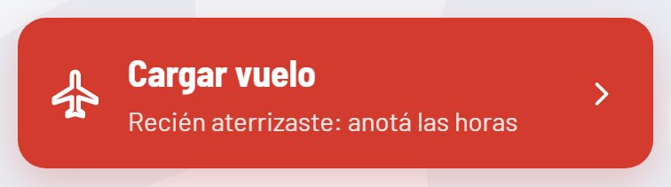
Te muestra el importe de tu último cupón, de qué mes es y si está pagado. Con Ver cupón en PDF lo abrís para verlo, guardarlo o mandarlo. Con Ver cuenta vas a todos tus cupones.
Si todavía no tuviste ningún cierre, te dice cuándo se genera tu primer cupón.
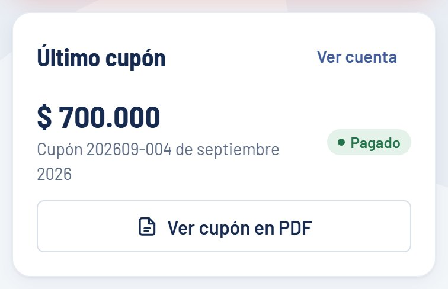
Tus cinco vuelos más recientes. Cada uno muestra la matrícula, la fecha, el horario, con quién volaste, las horas y el importe. Si le tocás encima, ves todo el detalle. Con Ver todos vas a Mis vuelos (capítulo 7).
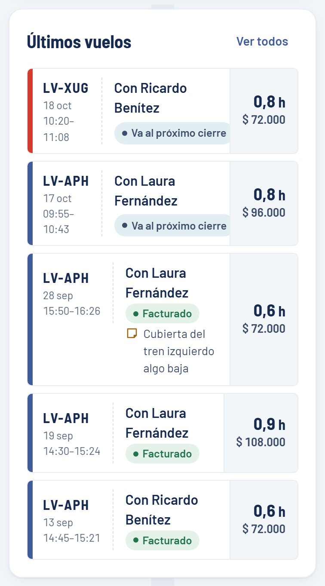
Acá ves lo que anotaron los pilotos sobre los aviones (aceite, combustible, algo que no anda) y que mantenimiento todavía no revisó. Antes de volar, conviene pegarle una mirada.
Cuando mantenimiento lo revisa, la novedad desaparece de esta lista.
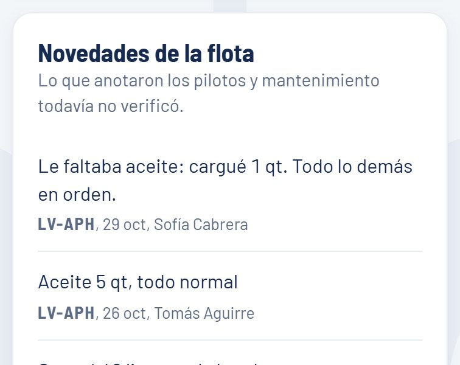
Si este mes ya volaste, al final aparece una tarjeta por cada avión que usaste: cuántas horas y vuelos hiciste vos en ese avión, y lo que sale la hora con instructor y sin instructor.
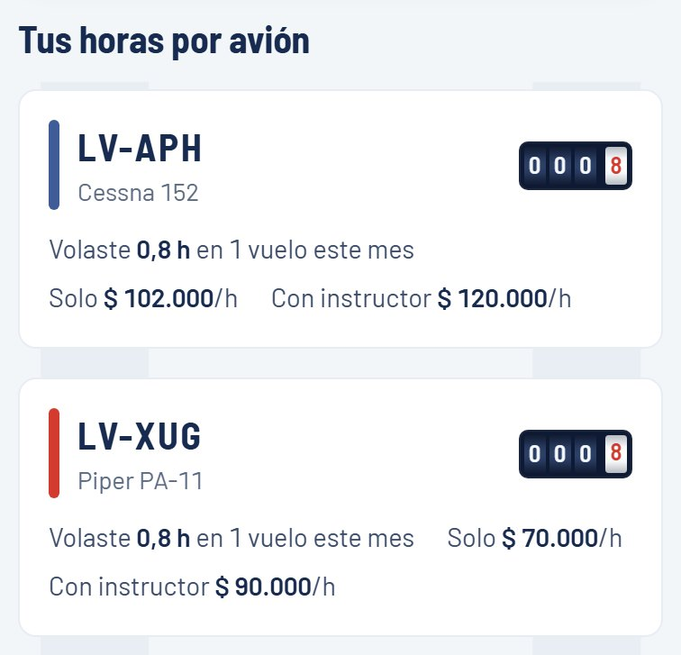
Se hace en menos de un minuto. Tocá el + rojo de la barra de abajo o el botón Cargar vuelo de Inicio, y completá los seis pasos.
Una vez que aceptás el vuelo, ya no lo podés cambiar ni borrar. Si te equivocás, avisale a tesorería. Por eso, al final el sistema te muestra todo para que lo revises.
Arriba de la pantalla te lo recuerda: "Cargalo apenas bajes del avión. Revisalo bien: una vez aceptado, no se puede modificar."
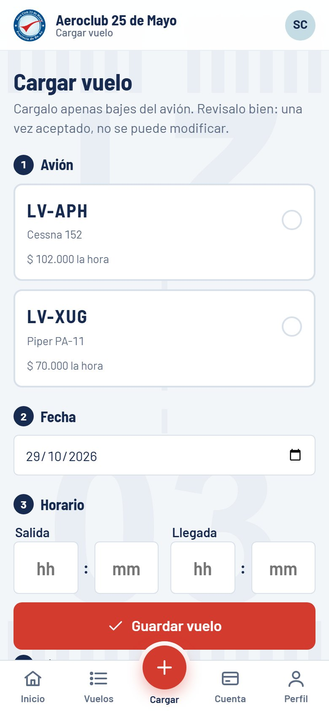
Tocá el avión en el que volaste. Cada tarjeta muestra la matrícula, el modelo y lo que sale la hora sin instructor. El elegido queda marcado con un tilde azul.
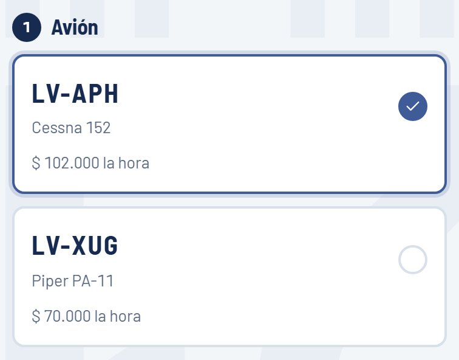
Ya viene puesta la fecha de hoy. Si estás cargando un vuelo de otro día, tocala y elegí la fecha real. No se pueden poner fechas futuras.
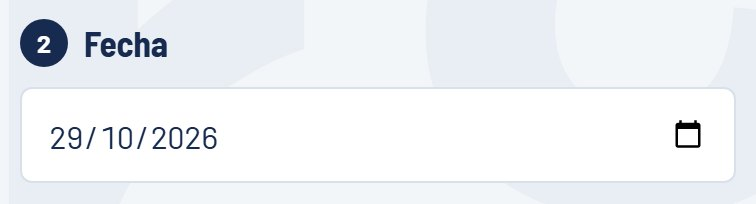
Escribí la hora de salida y la de llegada, en formato de 24 horas: primero la hora y después los minutos. Por ejemplo, las 2 y media de la tarde es 14 y 30.
En el celular se abre el teclado de números y, cuando completás la hora, el cursor pasa solo a los minutos. Si escribís "7", queda como "07".
Si el vuelo pasó la medianoche (salida 23:40, llegada 00:30), no pasa nada: el sistema lo calcula bien.
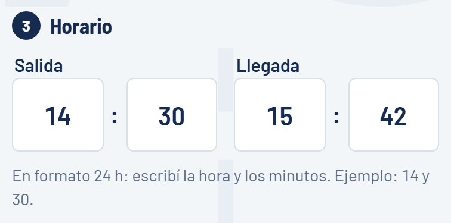
No lo escribís vos: se calcula solo con la salida y la llegada, según la tabla de minutos del club. Al lado ves el importe que va a tener el vuelo, que se suma a tu cuenta en el cierre del mes.
Si el vuelo da más de 6 horas, te avisa para que revises el horario.
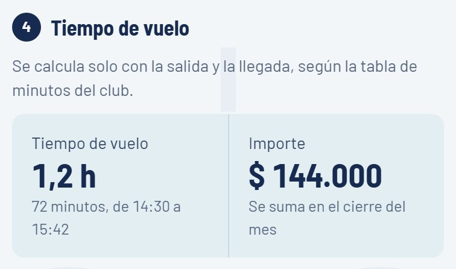
Las horas se cuentan en décimas (0,1 h). Así se pasan los minutos a décimas:
| Minutos | Horas |
|---|---|
| 3 a 8 | 0,1 |
| 9 a 14 | 0,2 |
| 15 a 20 | 0,3 |
| 21 a 26 | 0,4 |
| 27 a 33 | 0,5 |
| Minutos | Horas |
|---|---|
| 34 a 39 | 0,6 |
| 40 a 45 | 0,7 |
| 46 a 51 | 0,8 |
| 52 a 57 | 0,9 |
| 58 a 60 | 1,0 |
Pasada la hora, se cuentan las horas enteras y la tabla se aplica a los minutos que sobran. Ejemplo: de 14:30 a 15:42 son 72 minutos = 1 hora + 12 minutos = 1,2 h.
Elegí Sin instructor o Con instructor. Cada opción muestra su precio por hora.
Si volaste con instructor, abajo aparece la lista Instructor: elegí con quién volaste. Si sos alumno, casi siempre va a ser "Con instructor".
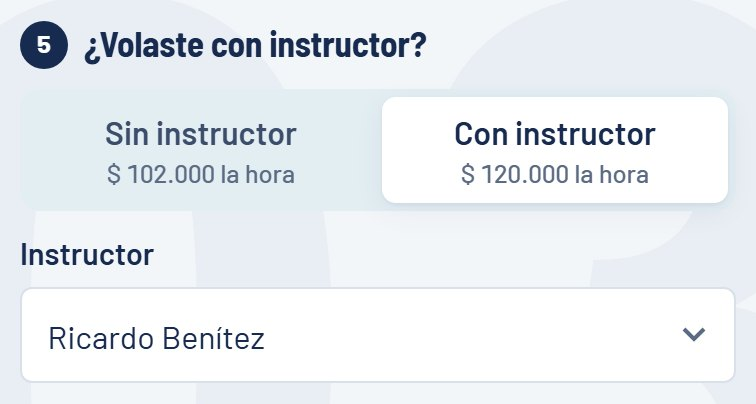
Es opcional, pero muy útil. Anotá cualquier cosa del avión: si le pusiste aceite o nafta, si algo hace un ruido raro, si una cubierta está baja. Le llega a tesorería y a mantenimiento, y los demás pilotos la ven en Inicio hasta que mantenimiento la revisa.
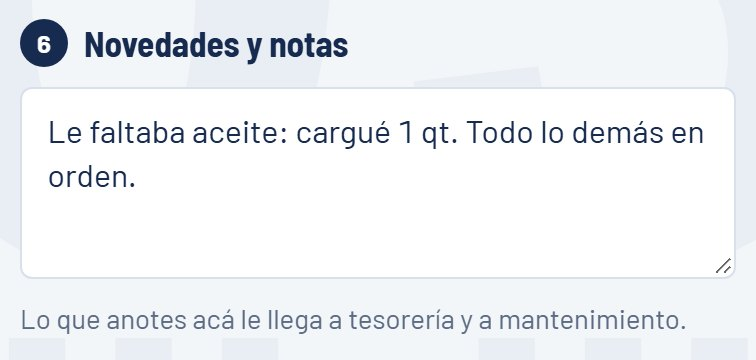
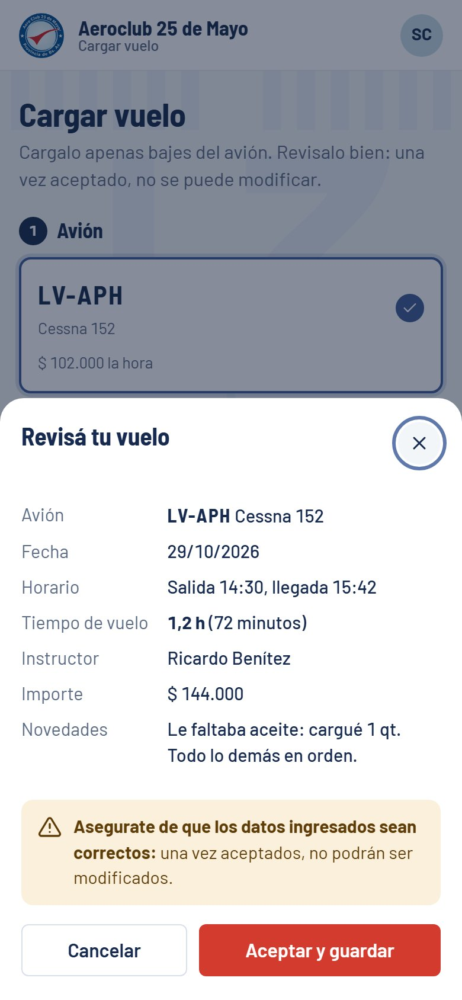
Vas a ver un tilde verde, las horas que volaste y el importe que se va a facturar en el cierre del mes. Desde ahí podés ir a Ver mis vuelos o Cargar otro.
A veces aparece un aviso, por ejemplo:
Si te dice que falta la tarifa de ese avión, avisale a tesorería: tienen que cargar el precio para esa fecha.
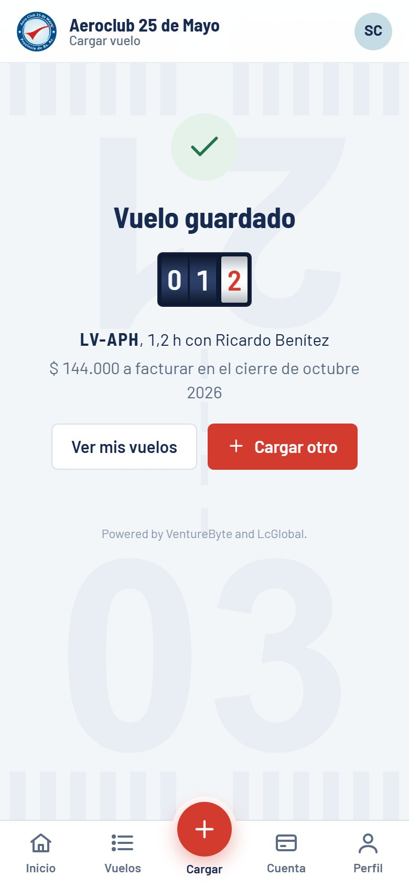
Todos tus vuelos, ordenados por mes. Entrás con Vuelos, en la barra de abajo.
Arriba está el mes que estás viendo. Con las flechitas ‹ › pasás al mes anterior o al siguiente.
El botón Descargar mis horas (Excel) te baja un archivo con todos tus vuelos desde el principio. Sirve, por ejemplo, para pasarlos a tu libro de vuelo.
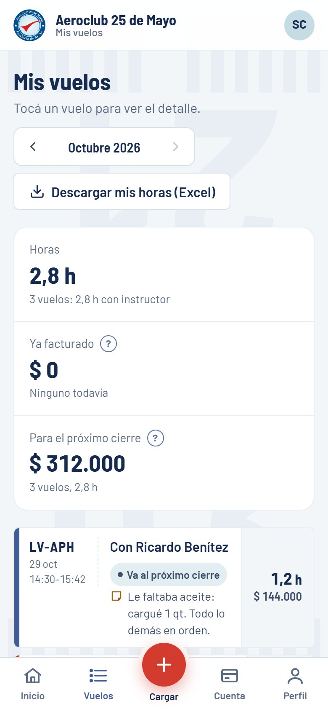
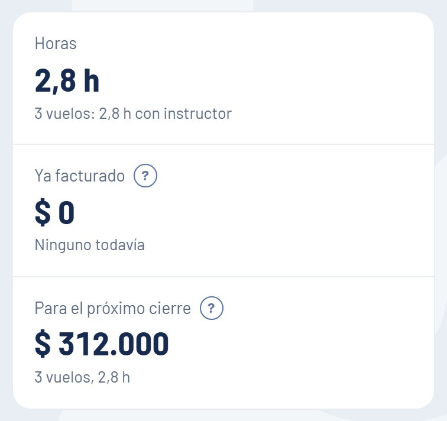
Cada vuelo es una tarjeta con:
Los estados posibles son:
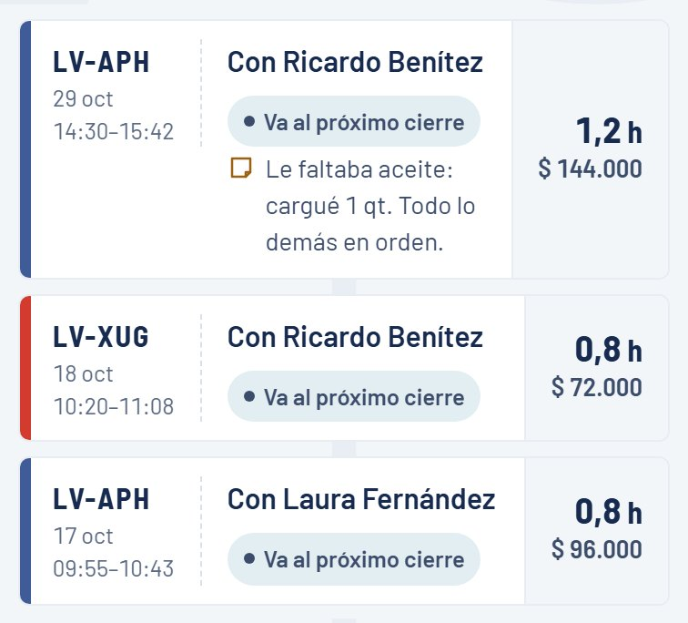
Tocá cualquier vuelo para ver todo: tiempo en minutos, importe y precio por hora, estado, horario, modelo del avión, novedades y quién lo cargó.
Abajo está el Historial: cuándo se cargó, si alguien lo corrigió y cuándo entró en el cierre.
Como dice el aviso, los vuelos no se pueden modificar una vez aceptados. Si ves un error, avisale a tesorería.
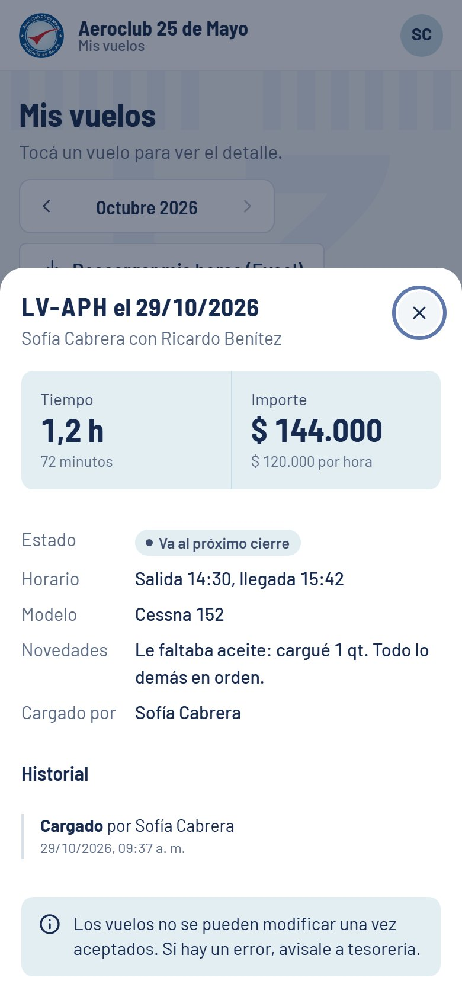
Al final de la pantalla tenés tus totales desde tu primer vuelo cargado en el sistema: horas totales, cuántas con instructor y cuántas solo, y el detalle por avión.
Si además sos instructor, arriba vas a ver dos pestañas: Como piloto y Como instructor. En la segunda ves los vuelos que diste y cuántos alumnos distintos tuviste.
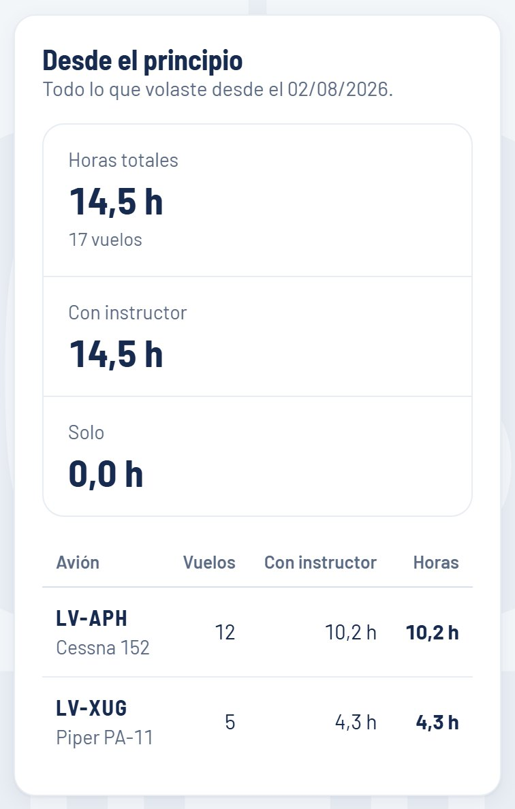
Todo lo que tiene que ver con plata: tu saldo, tus cupones, tus pagos y cada movimiento. Entrás con Cuenta, en la barra de abajo.
La tarjeta azul es como la de Inicio: cuánto debés (o tu saldo a favor) y si está Pendiente de pago o Al día.
Abajo te muestra los Vuelos para el próximo cierre y las Horas sin facturar: lo que volaste y todavía no entró en un cupón.
Debajo de la tarjeta está otra vez la caja Cómo pagar, con el alias y el CBU.
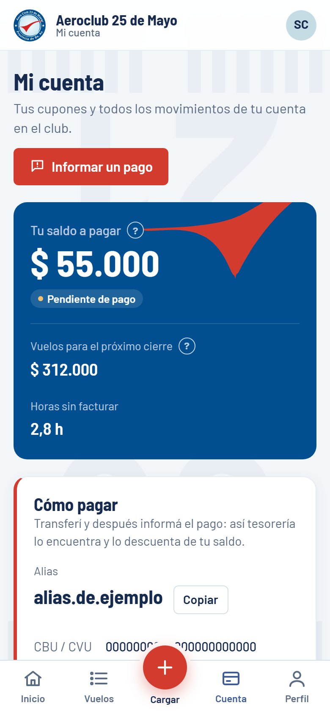
Después de transferir, avisale a tesorería desde acá. Tocá Informar un pago (arriba) o Informar el pago (en la caja Cómo pagar), y completá:
El pago no se descuenta enseguida. Queda "En revisión" hasta que tesorería lo encuentra en el banco y lo confirma. Ahí se descuenta de tu saldo.
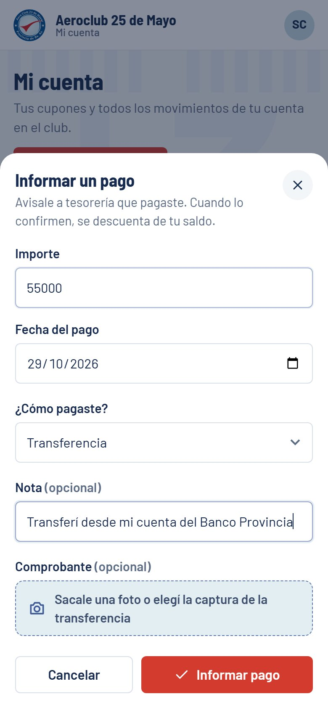
La lista de todos tus pagos: los que informaste vos, los que cargó tesorería y los que pagaste en rampa. Cada uno tiene su estado:
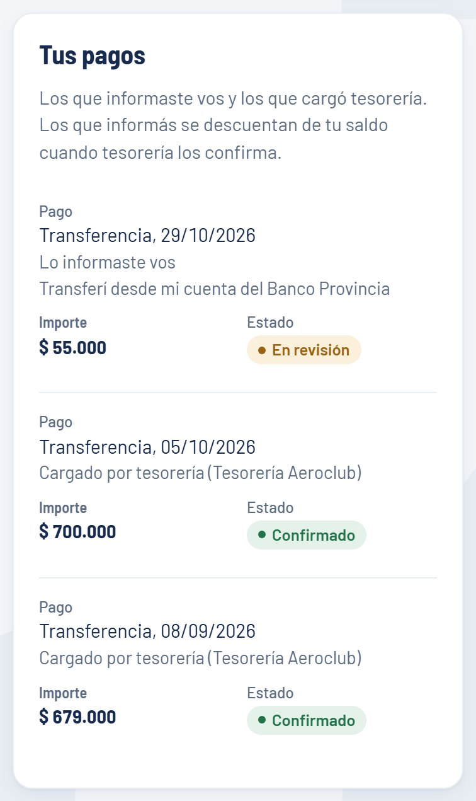
Un cupón por cada mes cerrado, con el número, la fecha de vencimiento, las horas, el total y el estado. Con PDF abrís el cupón (capítulo 9).
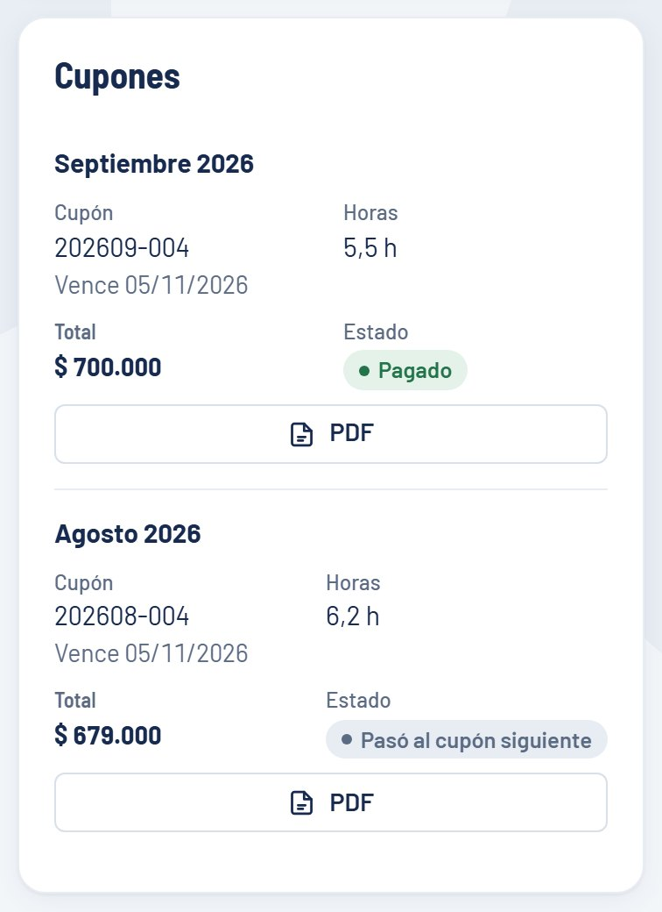
Es el detalle de tu cuenta, renglón por renglón, como un resumen del banco:
Los servicios tienen un botón Ticket para ver el comprobante en PDF. Los vuelos aparecen acá recién cuando entran en el cierre del mes.
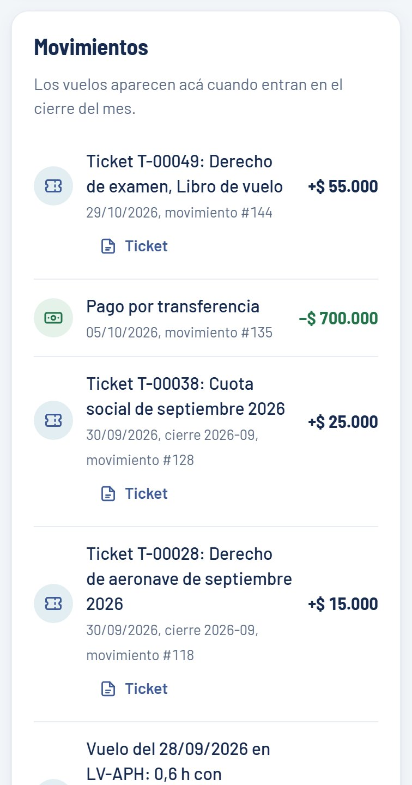
Todos los meses, en el cierre, se genera un cupón con todo lo del mes. Lo abrís en PDF desde Inicio o desde Mi cuenta, y lo podés guardar, imprimir o mandar.
Si querés revisar un vuelo del cupón, buscalo en Mis vuelos con esa fecha y tocalo para ver el detalle.
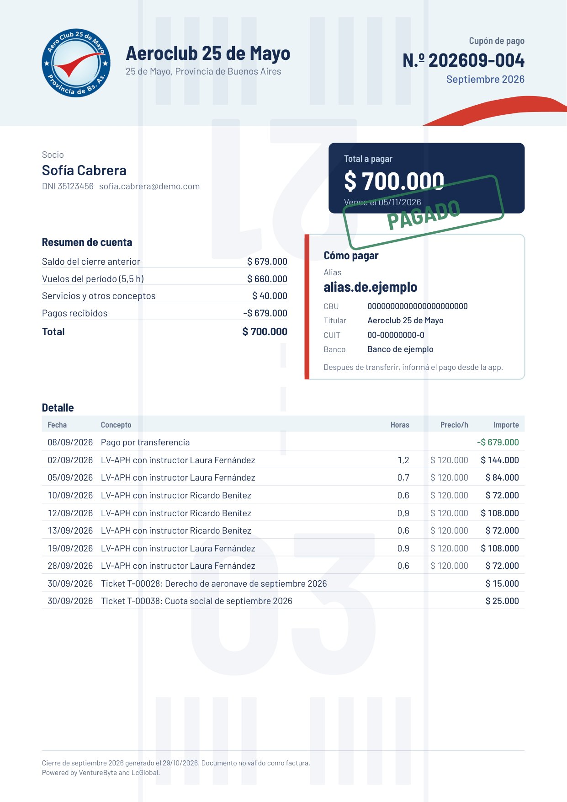
Tus datos y tu contraseña. Entrás con Perfil, en la barra de abajo, o tocando tus iniciales arriba a la derecha.
Cuando quieras, podés cambiar tu contraseña: escribí la actual, la nueva (8 caracteres o más), repetila y tocá Guardar contraseña.
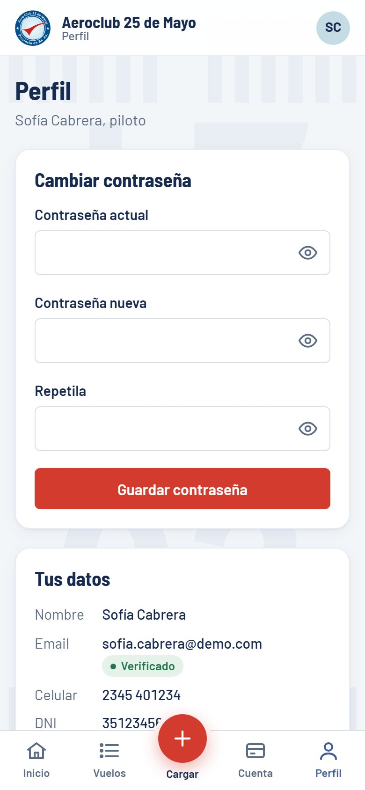
Ves los datos que tiene el club de vos: nombre, email, celular, DNI, licencia y hasta cuándo está vigente tu CMA.
Si tu email dice Sin verificar, tocá Mandarme el link. Te llega un mail: abrilo y tocá el link para confirmar que el email es tuyo. Si no lo ves, buscalo en spam.
Tus datos los actualiza tesorería. Si algo está mal o cambió (tu celular, tu email, el CMA renovado), tocá Pedir un cambio de datos, escribí qué hay que cambiar y mandalo: le llega a tesorería por mail.
Abajo de todo está el botón rojo Salir. Usalo si entraste desde un celular o una compu que no es tuya.
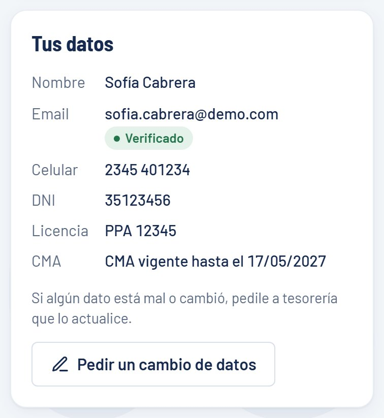
El club cobra por mes calendario. Así es el recorrido de un mes, desde que volás hasta que pagás.
Cuando hay algo que tenés que saber, aparece un aviso arriba de todo, en Inicio.
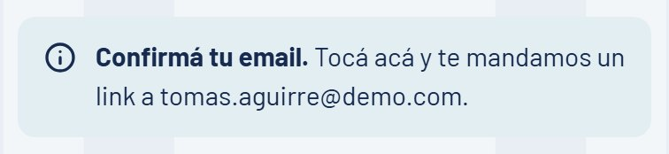
El club todavía no sabe si tu email es correcto. Tocá el aviso, después Mandarme el link, y abrí el mail que te llega. Así el club se asegura de tener bien tu email para escribirte.
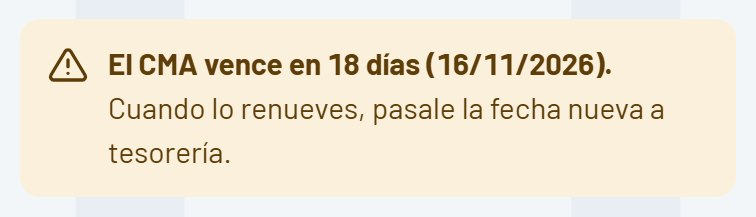
Desde 30 días antes del vencimiento del certificado médico (CMA), el sistema te lo recuerda. Cuando lo renueves, pasale la fecha nueva a tesorería (podés usar Pedir un cambio de datos, en Perfil).
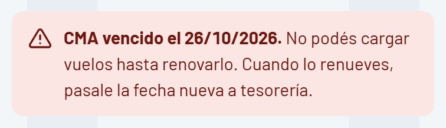
Con el CMA vencido no podés cargar vuelos. Seguís pudiendo entrar, ver tu cuenta y pagar. Cuando lo renueves y tesorería cargue la fecha nueva, vuelve todo a la normalidad.
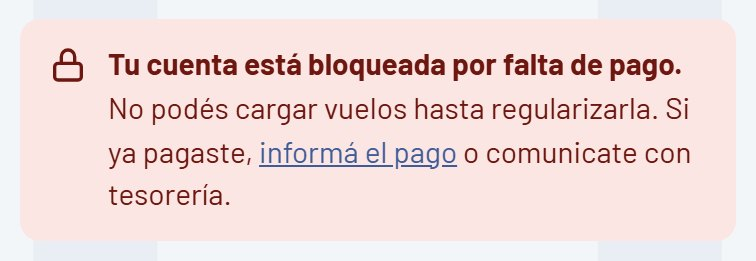
Si tesorería bloquea tu cuenta por deuda:
Si ya pagaste, informá el pago o hablá con tesorería. Cuando se regulariza, te habilitan de nuevo.
Así se ve el botón de carga cuando está bloqueado, por deuda o por el CMA.
Avisale a tesorería con el avión, la fecha y qué está mal. Ellos lo corrigen o lo anulan. Vos no lo podés cambiar una vez aceptado.
El sistema te avisa si encuentra uno igual. Pedile a tesorería que anule el repetido: el anulado no se cobra.
Cargalo igual, con la fecha real en el paso 2. Si ese mes ya se cerró, se cobra en tu próximo cupón.
Porque los vuelos se suman a tu saldo el día del cierre (el 1 de cada mes). Mientras tanto, los ves en "Vuelos para el próximo cierre".
Fijate en Mi cuenta, en "Tus pagos". Si no está, informalo. Si dice En revisión, falta que tesorería lo confirme. Si dice Rechazado, ahí mismo está el motivo.
Si se lo diste en mano a tesorería o en rampa, lo cargan ellos y aparece en "Tus pagos". Si no lo ves después de unos días, consultá.
Pedile una nueva a tesorería. Te dan una temporal y al entrar elegís una tuya.
En Perfil, tocá "Pedir un cambio de datos" y contá qué cambió. Si cambiaste de teléfono, entrás igual con tu email y tu contraseña.
Avisale a tesorería: tienen que marcarlo como instructor en el sistema. Mientras tanto, no cargues el vuelo como "Sin instructor".
Sí. Entrá a aeroclub25demayo.com.ar desde cualquier navegador. En la compu, el menú aparece a la izquierda en vez de abajo.
Cargalo con la fecha del día en que salió. El sistema calcula bien el tiempo aunque la llegada sea al día siguiente.
Leé el mensaje rojo: te dice qué falta. Si dice que tu cuenta está bloqueada o tu CMA vencido, mirá el capítulo 12. Si dice que falta la tarifa, avisale a tesorería.
Consultá con tesorería del Aeroclub.
aeroclub25demayo.com.ar
Aeroclub 25 de Mayo · Fundado el 4 de septiembre de 1939
Powered by VentureByte and LcGlobal.